For iPad · iPhone · Apple Watch
Your iPad, reborn as a Shia azan clock.
Prop it on the mantel, the kitchen counter, or the bedside table. Shia Daily turns the screen into an always-on prayer clock for the whole family — accurate Jaffari prayer times, azan alerts, and themes that change with the Islamic calendar.
Live preview — ticking with your local time. Sample schedule shown; the app calculates times for your exact location.
Azan Clock Mode
A prayer clock that lives on your wall — not another gadget to buy.
Leave Shia Daily open on an iPad and it becomes a dedicated azan clock: a large, glanceable display with the time, the Hijri date, today's prayer schedule, and a countdown to the next salah. When the time arrives, the whole screen announces it.
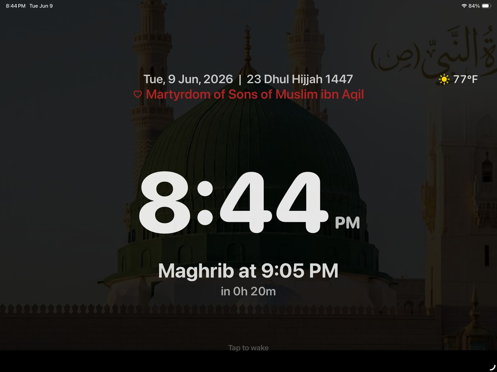
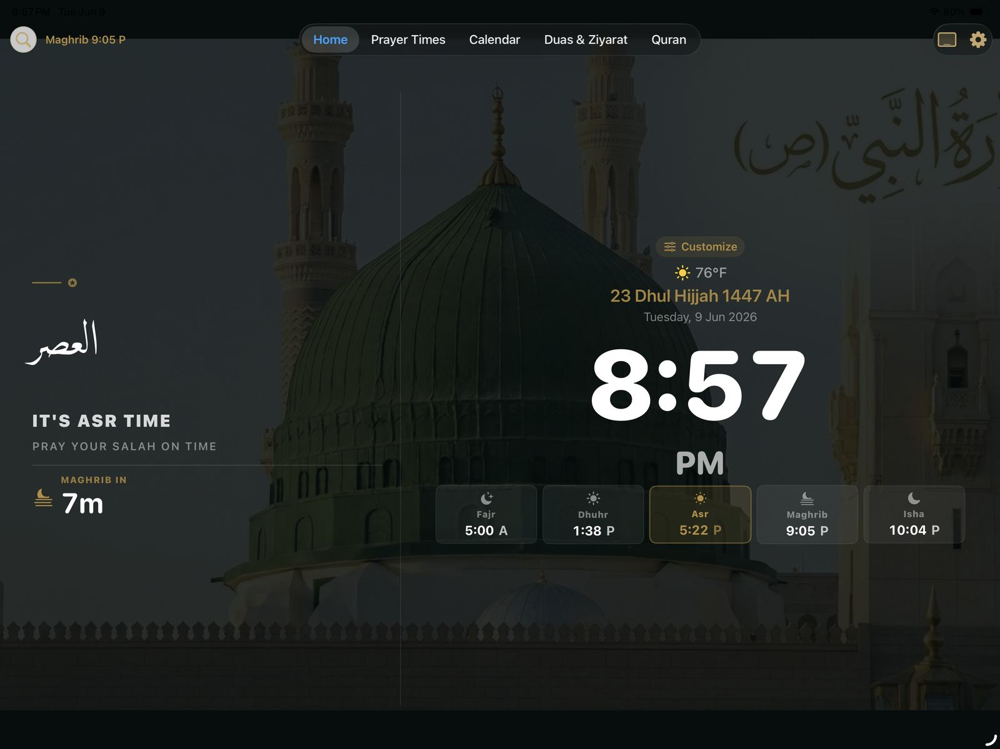
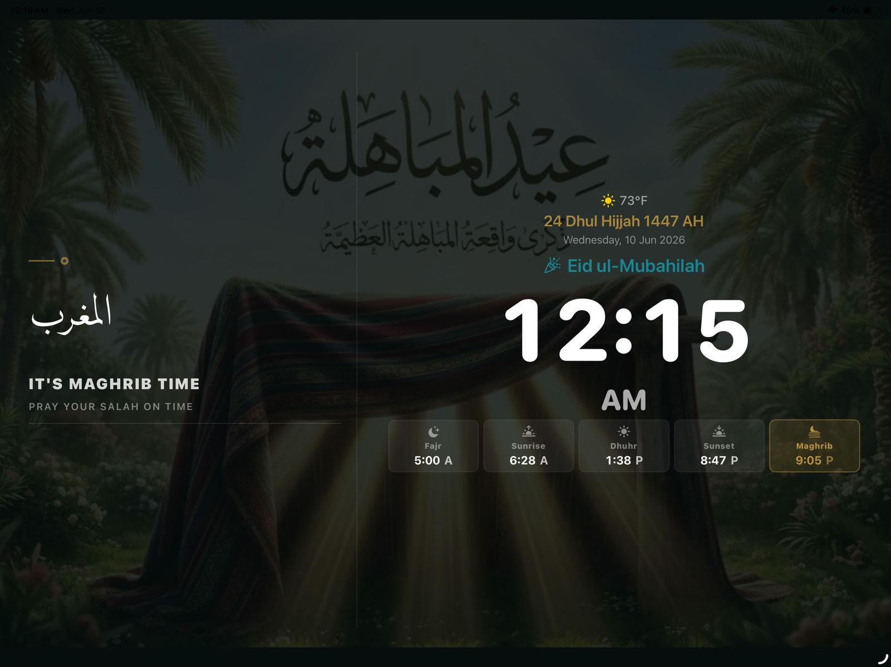
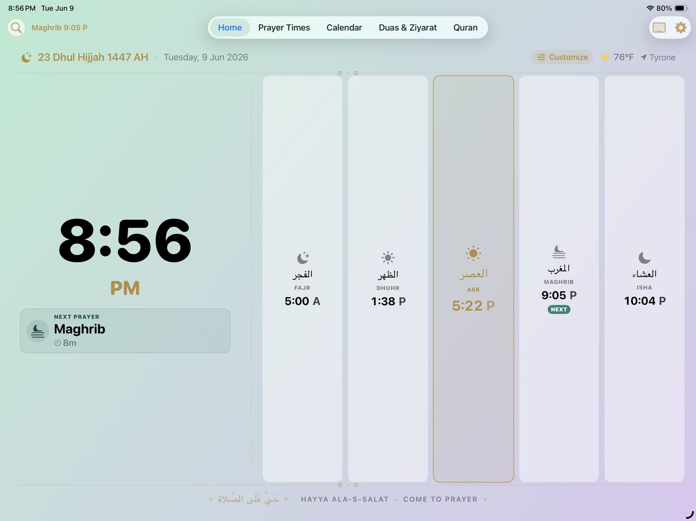
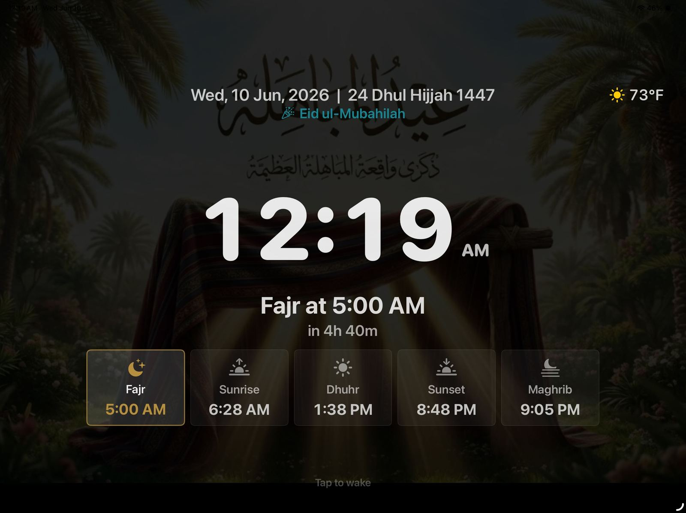
Everything Around the Clock
One app for the whole daily rhythm.
The azan clock is the face of Shia Daily — behind it is a complete companion for worship, reading, and remembrance.
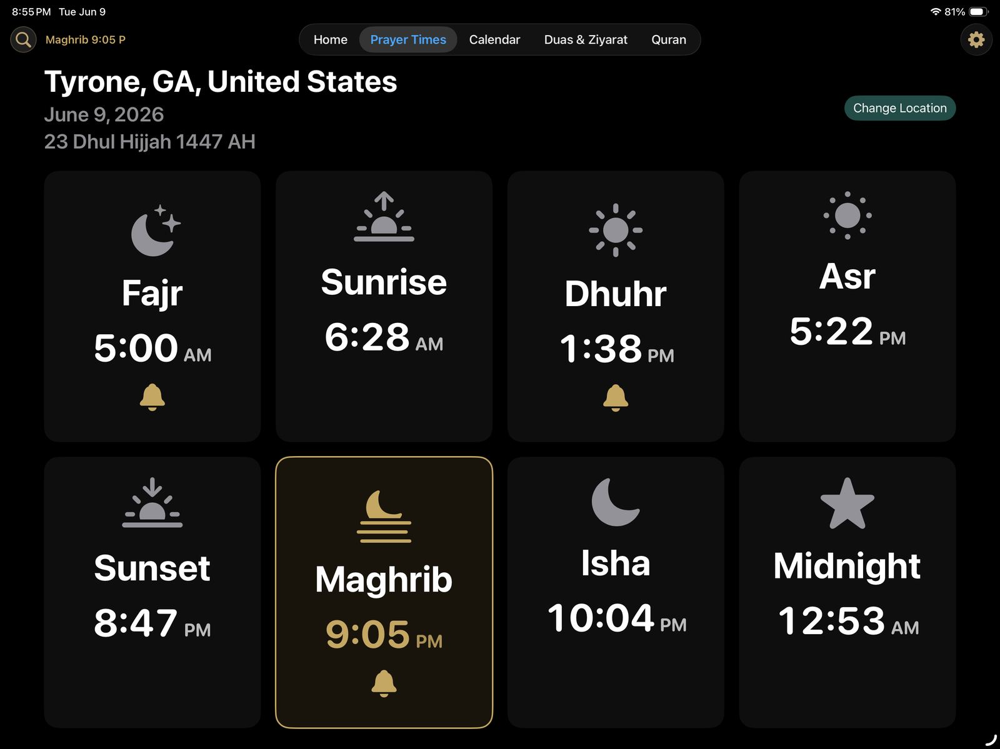
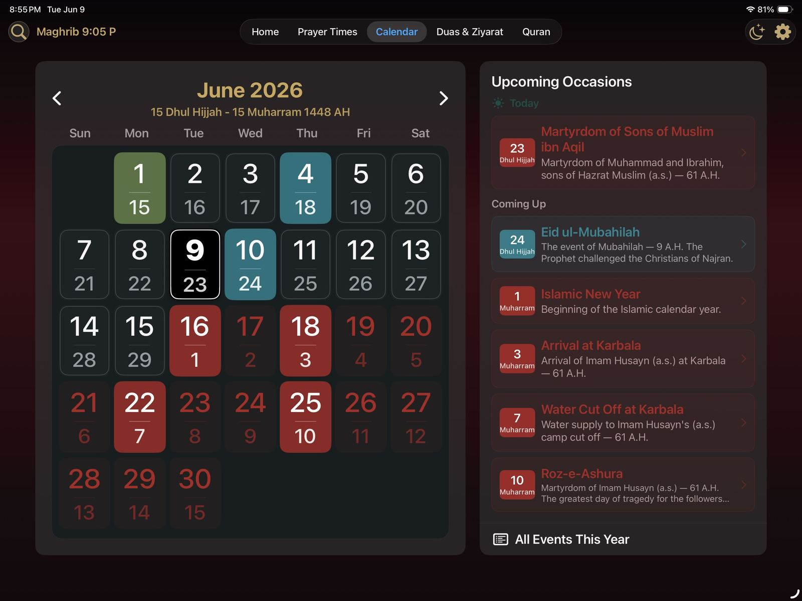
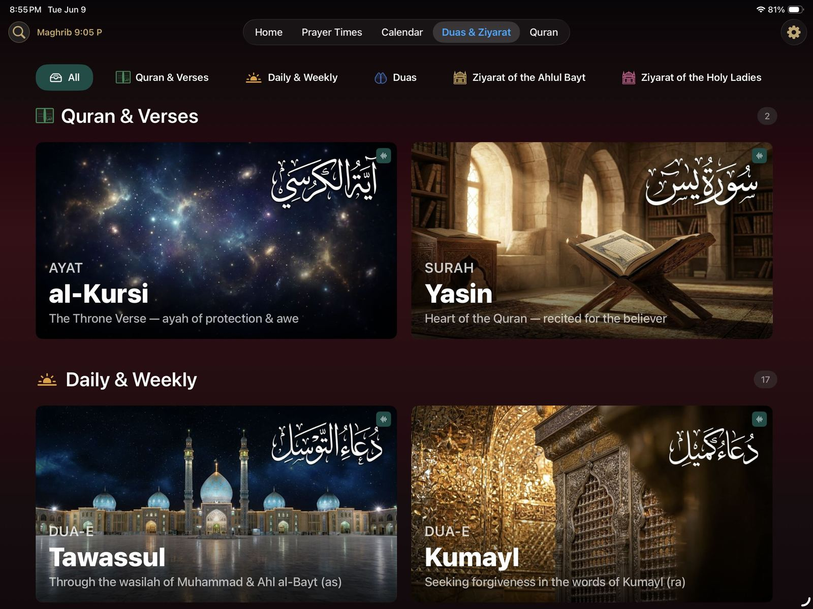
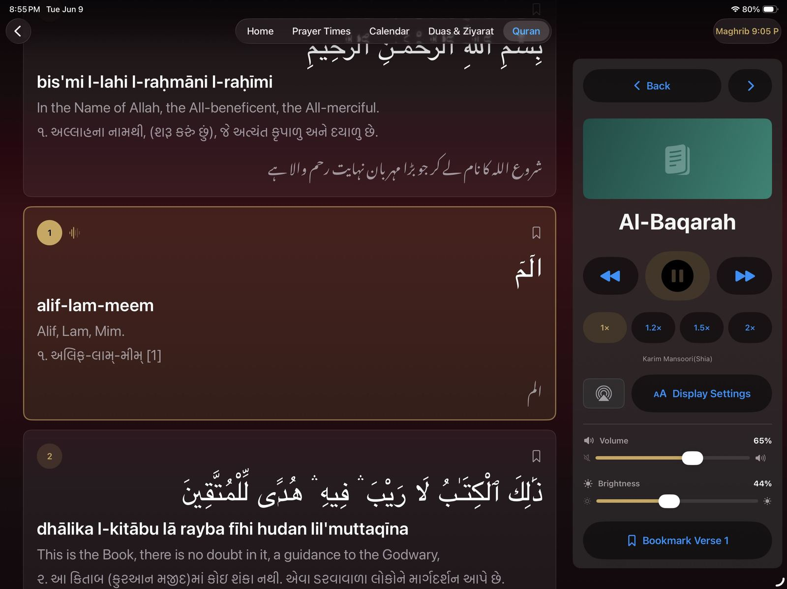
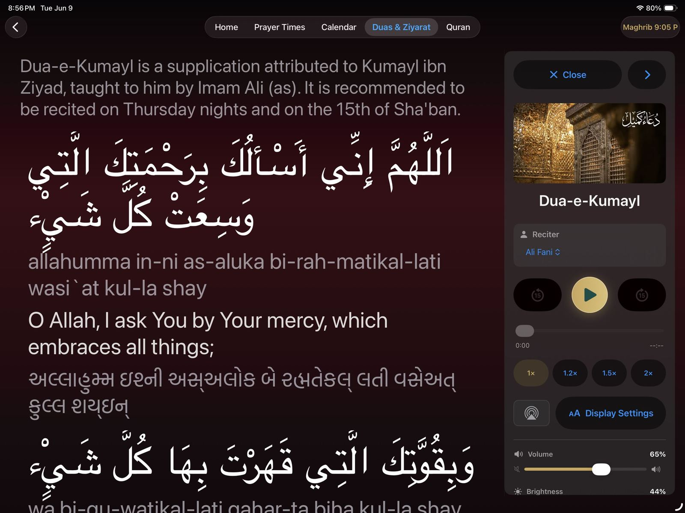
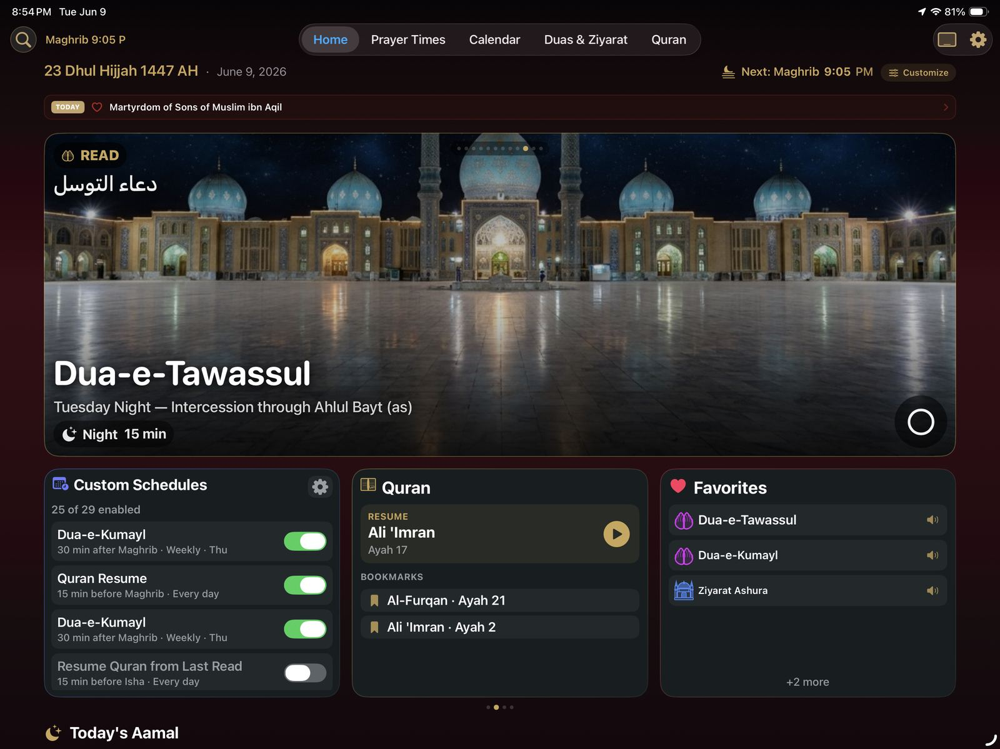
Why an App?
The azan clock you already own.
Dedicated azan-clock devices cost $200 or more, ship from overseas, and do one job. Shia Daily brings the same experience — and more — to the Apple devices already in your home.
-
$0
Free, forever
No purchase, no subscription, no ads. Download and it's done.
-
⟳
Always improving
Regular App Store updates — qadha tracker, tasbih, Hajj & Umrah guide, and occasion themes have all shipped since launch.
-
⌚
Beyond the wall
The same prayer times and duas on your iPhone and Apple Watch when you leave the house.
-
🔒
Private by design
The app collects no data at all — your worship stays between you and Allah.
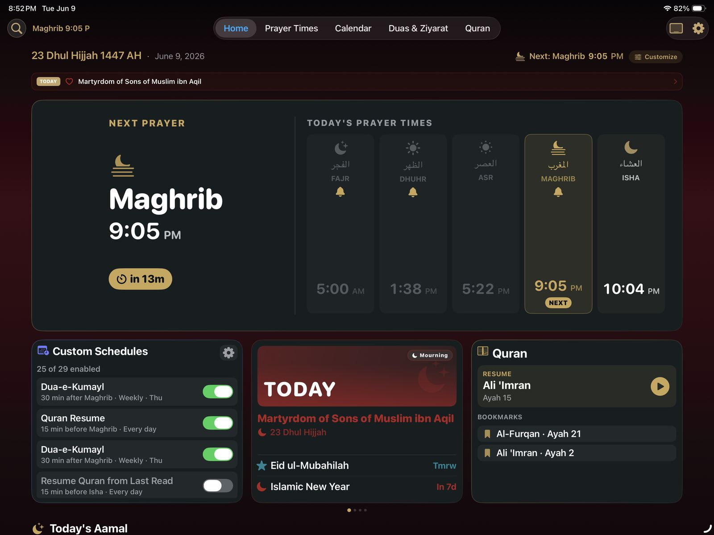
Questions
Before you set it on the shelf.
How do I use my iPad as an always-on azan clock?
Open Shia Daily, switch to clock mode, and place the iPad on a stand. The display dims automatically at night with tap-to-wake, and the azan plays at each prayer time. For an all-day display, keep the iPad plugged in and set Auto-Lock to Never in iPad Settings.
Does it work for my city?
Yes — prayer times are calculated for your exact location anywhere in the world, following the Jaffari method, with sunset, Maghrib, and midnight shown separately.
Does it work offline?
Prayer times, the calendar, and bundled audio work without a connection, and additional recitations can be downloaded ahead of travel.
Which devices are supported?
iPhone and iPad (iOS 16.6 or later), Apple Watch (watchOS 10.6 or later), Apple Silicon Macs, and Apple Vision Pro. English, Arabic, and Gujarati are supported, with Gujarati and Urdu translations for readings.
Begin tonight, before Maghrib.
Download Shia Daily, set the iPad where the family gathers, and let the house keep its own prayer time.